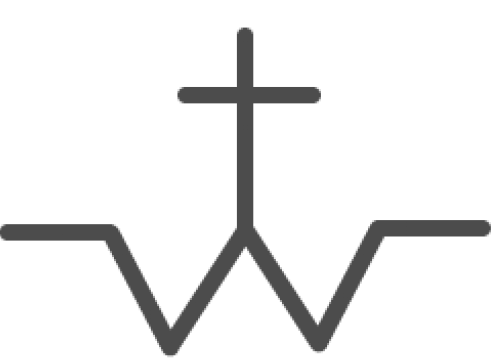

30
Miércoles
Castilla La Mancha Media
(18:00)
Ver vídeo
Sacedón (Guadalajara)
Toros de
Amparo Valdemoro
Procedencia Murube-Urquijo, D. Luis Gamero Cívico y Jandilla
Sebastián
Fernández

Toros de
José Luis Pereda
Procedencia D. Luis Gamero Cívico-D. Juan Guardiola Soto
Morenito de Aranda
David de Miranda
 Castilla La Mancha Media
Castilla La Mancha Media  Ver vídeo
Ver vídeo
 Toros de
Toros de  Sebastián Morenito de ArandaDavid de Miranda
Sebastián Morenito de ArandaDavid de Miranda